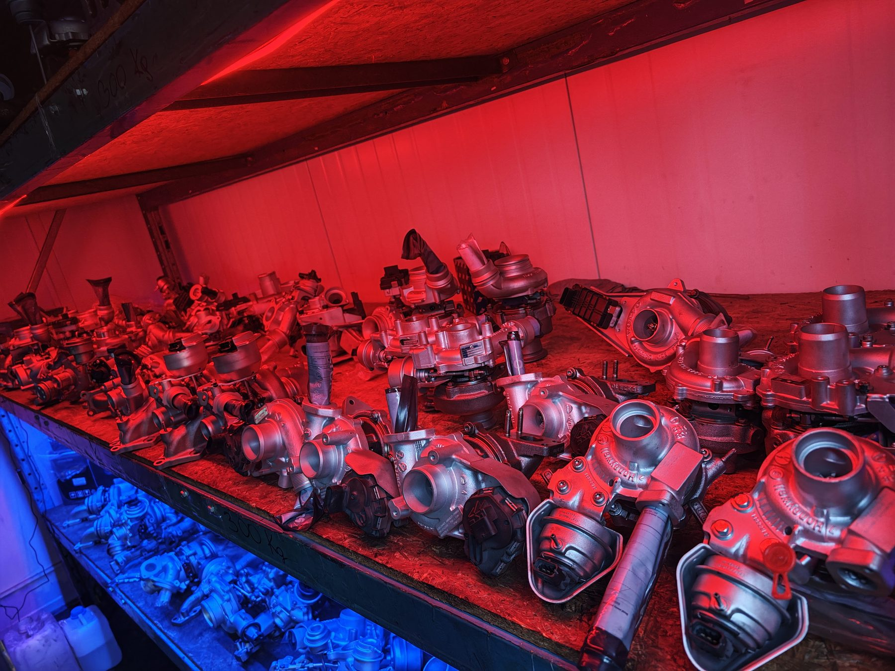
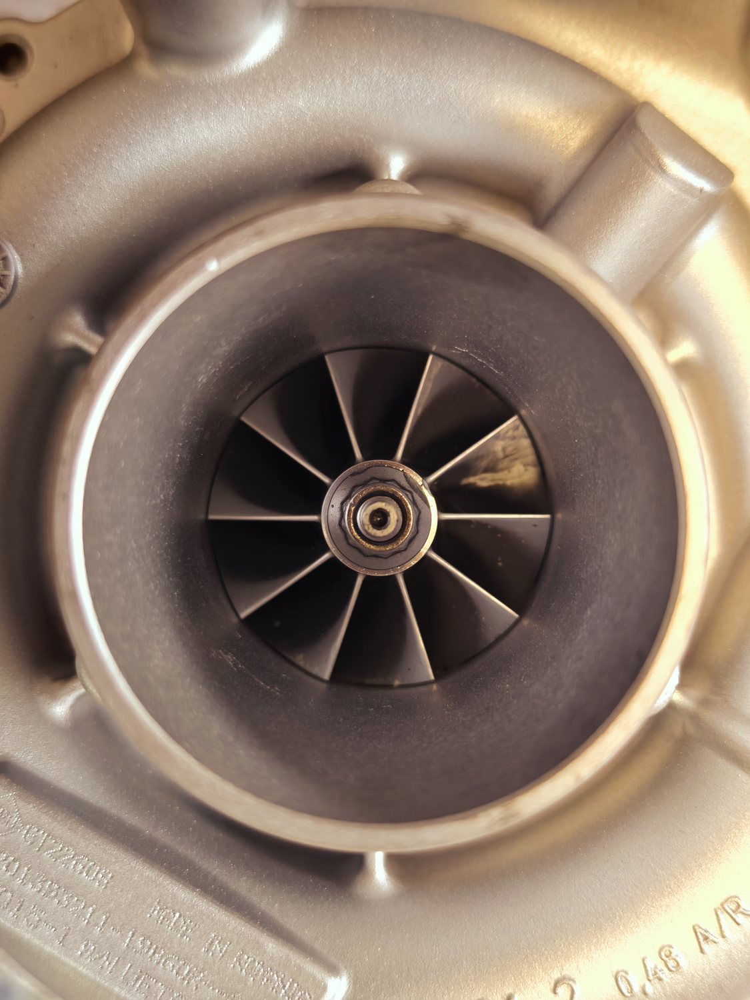
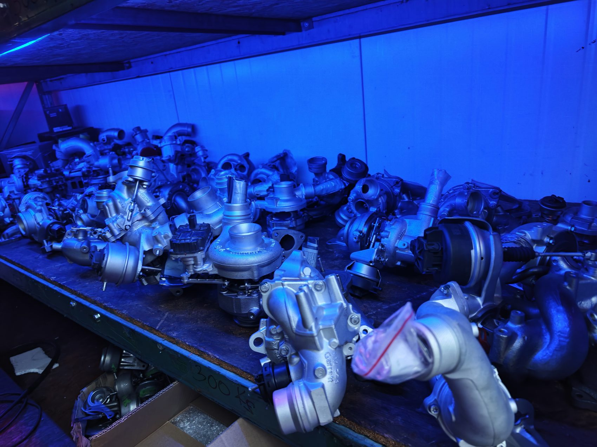
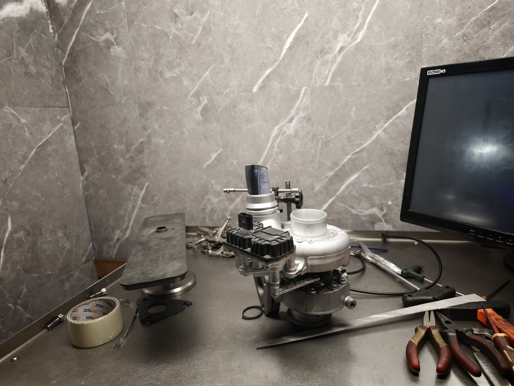
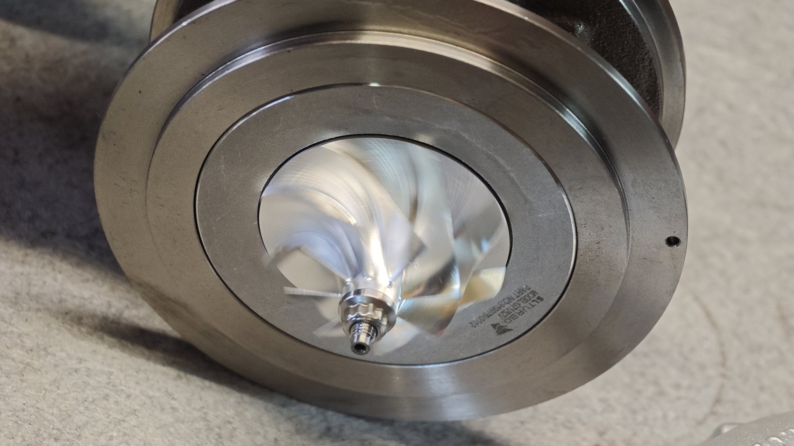

Precyzyjna diagnostyka
Każdą turbinę rozkładamy do ostatniej śruby i mierzymy luzy z dokładnością do setnych milimetra. Wiemy dokładnie, co zawiodło — i dlaczego.

Profesjonalna regeneracja z 24-miesięczną gwarancją bez limitu kilometrów. Oryginalne części OEM. Precyzja balansowania VSR. Wysyłka w 24h w całej Polsce.

VSR 301 balanced
0
zregenerowanych turbin
24h
wysyłka w PL
0
zregenerowanych turbin
0 lat
doświadczenia
24 mies.
gwarancji bez limitu km
OEM
oryginalne części
VSR 301
balansowanie maszynowe
24h
ekspresowa wysyłka
Cena fabrycznie nowej turbosprężarki to często 3 000 – 9 000 zł i więcej. A prawda jest taka, że w 90% przypadków uszkodzeniu ulega kilka elementów — rdzeń, czyli to co najdroższe, jest w idealnym stanie i można go przywrócić do parametrów fabrycznych.
Profesjonalna regeneracja w TURBO-GIT to ta sama wydajność i ta sama trwałość — za ułamek ceny.

Przykład: turbina do popularnego diesla 2.0 TDI
* Wartości poglądowe. Dokładną wycenę otrzymasz po bezpłatnej diagnostyce.
Sześć powodów, dla których kierowcy i warsztaty z całej Polski wysyłają turbiny właśnie do nas.
Każdą turbinę rozkładamy do ostatniej śruby i mierzymy luzy z dokładnością do setnych milimetra. Wiemy dokładnie, co zawiodło — i dlaczego.
Zero zamienników z niewiadomego źródła. Zestawy naprawcze i geometrie pochodzą od oryginalnych dostawców — tak jak na linii produkcyjnej.
Rdzeń balansujemy na maszynie VSR przy realnych obrotach roboczych. Efekt: zero wibracji, cicha praca i żywotność jak w nowej turbinie.
Geometrię zmiennych łopatek i ciśnienie doładowania sprawdzamy na stanowisku testowym. Turbina wraca do Ciebie sprawdzona, nie „na czuja”.
Dokumentujemy stan turbiny zdjęciami przed i po. Wiesz dokładnie, za co płacisz — bez ukrytych kosztów i bez ściemy.
Regeneracja to mniej odpadu i mniej wydobycia surowców niż produkcja nowej części. Dobrze dla portfela i dla planety.
Kliknij dowolny krok, żeby zobaczyć co dokładnie się dzieje i dlaczego to ma znaczenie.

Dlaczego to kluczowe
Sprzęt, którego nie znajdziesz w przeciętnym warsztacie. To dlatego nasze turbiny po prostu działają.

VSR 301Vibration Sorting Rig — balansowanie zmontowanego rdzenia przy obrotach zbliżonych do roboczych (nawet 200 000+ obr./min). To eliminuje mikrowibracje, które niszczą łożyskowanie.
Kalibracja zmiennej geometrii (VNT) i aktuatorów elektronicznych pod kontrolą sygnału sterującego.
Usuwa nagar i osady z każdego kanału bez ścierania materiału. Czystość na poziomie produkcyjnym.
Mikrometry i czujniki zegarowe — pomiar luzów osiowych i promieniowych do 0,01 mm.
Symulacja warunków pracy i pomiar ciśnienia doładowania przed wydaniem turbiny.
Wybierz element, żeby zobaczyć co regenerujemy i dlaczego ma to wpływ na trwałość Twojej turbiny.
Kliknij czerwone punkty lub zakładki obok
Co regenerujemy
Dlaczego to ważne
Setki rdzeni, geometrii i kompletnych turbin na stanie — dlatego potrafimy działać ekspresowo i dobrać właściwą część do niemal każdego silnika. To nie magazynowe zdjęcia z internetu. To nasz realny warsztat.
0
turbin
0
lat
4,9
ocena Google
Pracujemy na oryginalnych częściach i geometriach OEM
Stała współpraca dla certyfikowanych warsztatów: rabat 10%, termin płatności 30 dni i priorytetowa realizacja.
| Kryterium | Nowa turbina | TURBO-GIT |
|---|---|---|
| Cena | Bardzo wysoka (3–9 tys. zł+) | Niższa o 45–65% |
| Części | OEM | Oryginalne OEM |
| Balansowanie VSR | zależnie od producenta | Zawsze |
| Gwarancja | 12–24 mies. | 24 mies. bez limitu km |
| Czas realizacji | Często zamówienie z dostawą | Ekspres + wysyłka 24h |
| Ekologia | Pełna produkcja od zera | Niski ślad środowiskowy |
4,9/5 średnia ocen
Przeciągnij lub użyj strzałek →
Orientacyjna kalkulacja w kilka sekund. Finalną wycenę przygotujemy po diagnozie Twojej turbiny.
Twoja szacunkowa kalkulacja
Nowa turbina
0 zł
Regeneracja
0 zł
Oszczędzasz
0 zł
0%
Wartości orientacyjne. Nie stanowią oferty handlowej w rozumieniu art. 66 KC.
Wyślij zgłoszenie albo dzwoń. Doradzimy, zdiagnozujemy i przygotujemy wycenę bez zobowiązań. Odbiór kurierem z całej Polski.